Địa chỉ: Số 2 Phạm Văn Đồng, quận Cầu Giấy, Hà Nội.
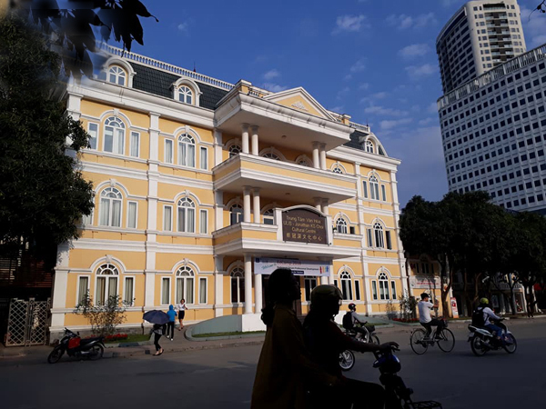 Đại học Ngoại ngữ (Nguồn: https://afamily.vn)Hãy dạo một vòng ULIS để thấy thế giới bên trong khiến đây là một ngôi trường như thế nào nhé:
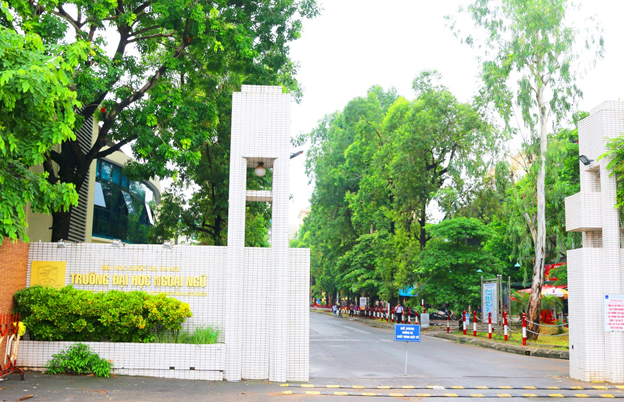Cổng vào trên đường Phạm Văn Đồng là nơi thế giới ULIS bắt đầu. Từ đằng xa, những tòa nhà cao cùng hàng cây rợp bóng xanh đã lấp ló chào mời.
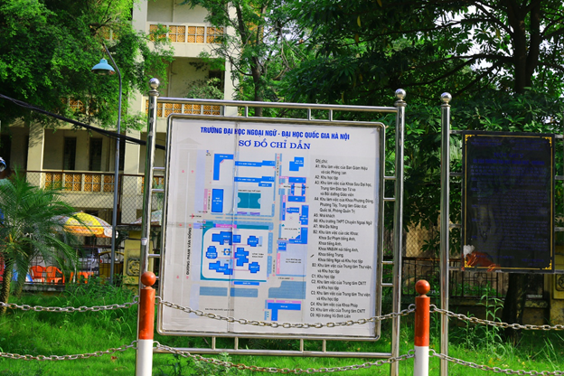 Bản đồ khu vực trường 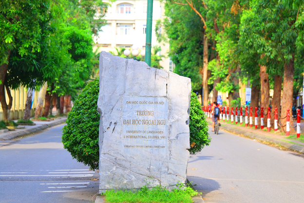 Tảng đá khắc tên trường 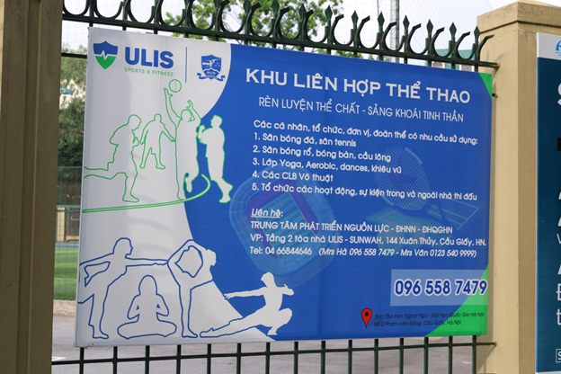Ngay cạnh cổng là khu liên hợp thể thao với sân bóng đá, tennis, bóng rổ, bóng bàn và khu phòng Gym được đầu tư với các trang thiết bị rất hiện đại.
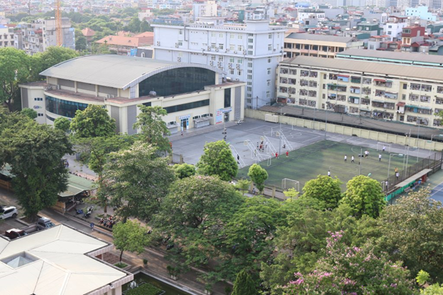 Sân vận động nhìn từ trên cao năm 2021 với sân được trải thảm cỏ và tòa nhà đa năng được xây dựng mới và hiện đại ở phía bên cạnh. 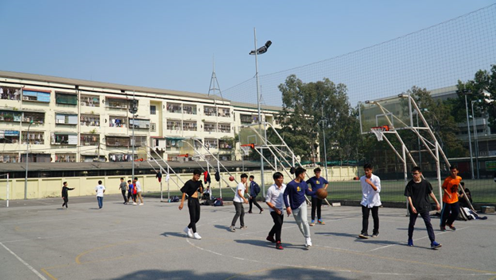 Đây là nơi sinh viên ULIS, học sinh Chuyên Ngoại ngữ tập thể dục thể thao và tổ chức các sự kiện ngoài trời.![[Có lỗi khi tải ảnh]](img/co_so_vat_chat/co_so_vat_chat_8.png) Tòa nhà đa năng dành riêng cho các sinh viên đến để học tập, thư giãn, đọc sách, làm việc nhóm
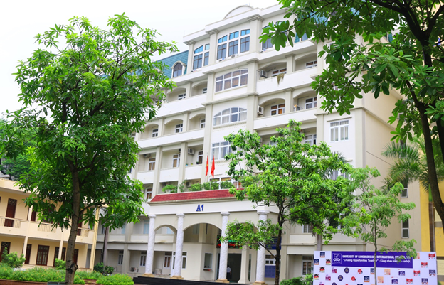
Khu A1 là tòa nhà điều hành, nơi đặt văn phòng làm việc của các phòng ban khoa
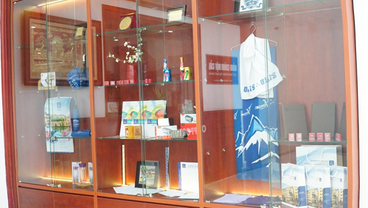
Không gian trưng bày vật phẩm mang thương hiệu ULIS
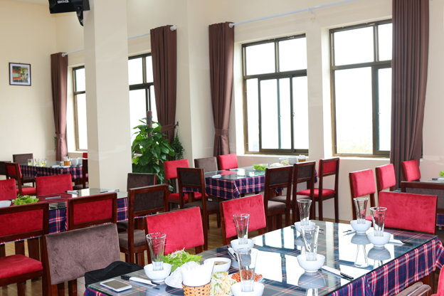
Trên tầng cao nhất là Zone 7 – một quán ăn với tầm nhìn đẹp.
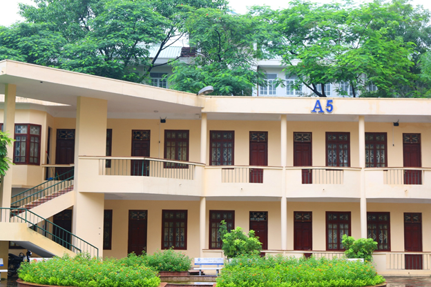
Khu A5 là nơi ở dành cho cán bộ nước ngoài.
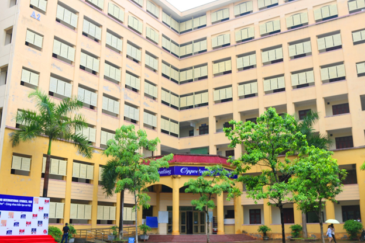
Khu A2 là nơi học tập của phần lớn sinh viên
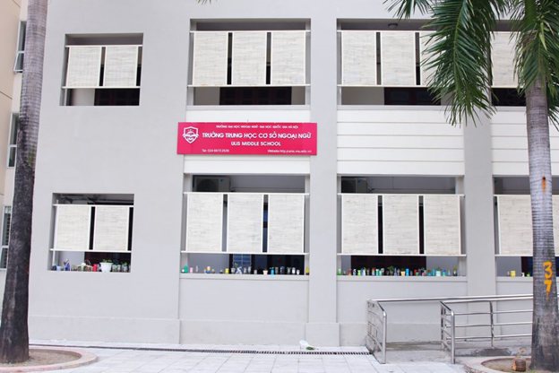
Đây cũng là nơi học tập của học sinh và nơi làm việc của cán bộ Trường THCS Ngoại ngữ
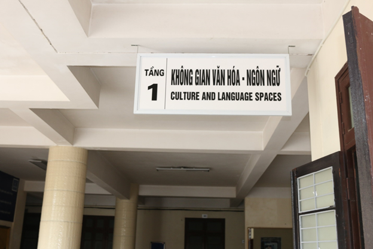
Không gian văn hóa – ngôn ngữ tại nhà A2 là nơi lui đến thường xuyên của các bạn ham đọc sách.
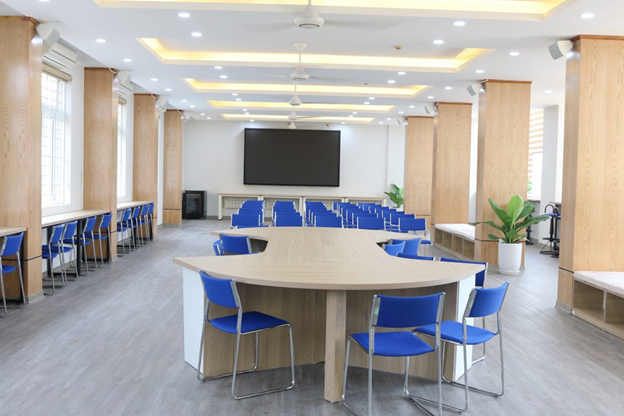
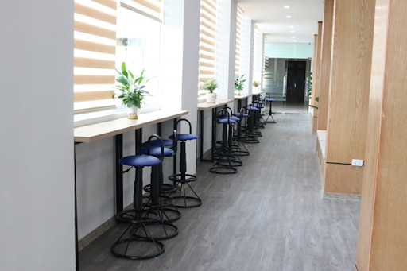
Không gian Làm việc chung tại tòa nhà A2
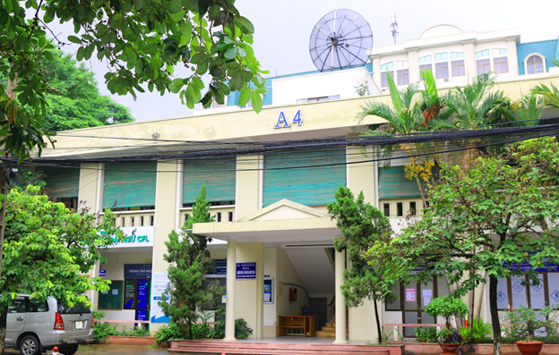
Khu A4 là trụ sở của Khoa NN&VH Nhật Bản, Đoàn Thanh niên, Khoa ĐT&BDNN, Phòng Quản trị, phòng Bảo vệ và các Trung tâm khác.
Tòa nhà đa năng dành riêng cho các sinh viên đến để học tập, thư giãn, đọc sách, làm việc nhóm
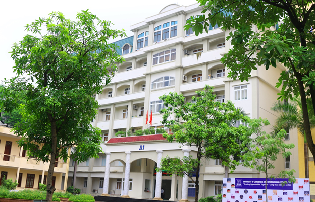
Khu A1 là tòa nhà điều hành, nơi đặt văn phòng làm việc của các phòng ban khoa
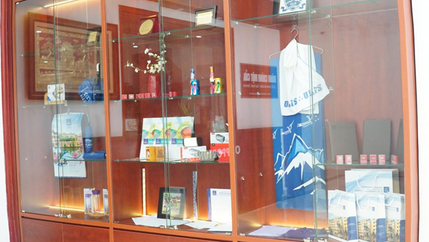
Không gian trưng bày vật phẩm mang thương hiệu ULIS
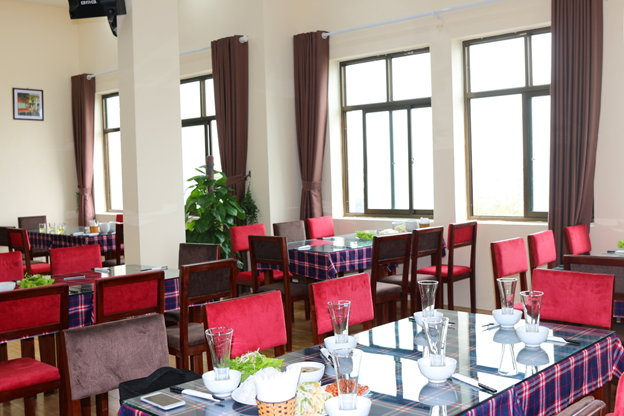
Trên tầng cao nhất là Zone 7 – một quán ăn với tầm nhìn đẹp.
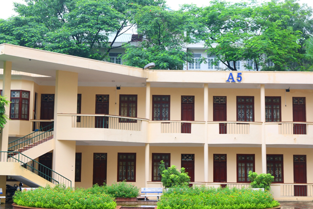
Khu A5 là nơi ở dành cho cán bộ nước ngoài.
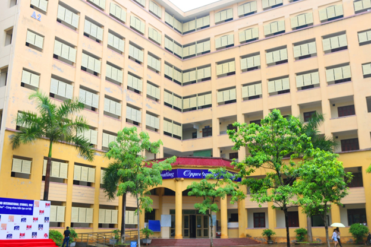
Khu A2 là nơi học tập của phần lớn sinh viên
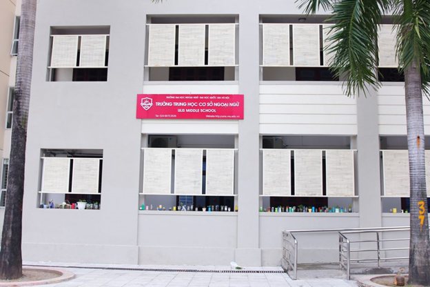
Đây cũng là nơi học tập của học sinh và nơi làm việc của cán bộ Trường THCS Ngoại ngữ
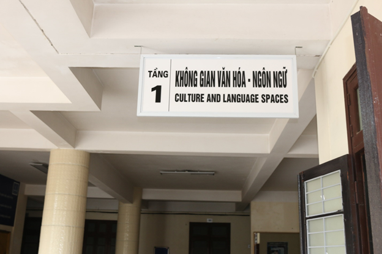
Không gian văn hóa – ngôn ngữ tại nhà A2 là nơi lui đến thường xuyên của các bạn ham đọc sách.
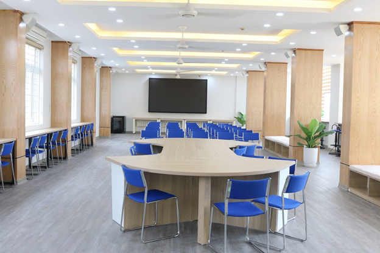
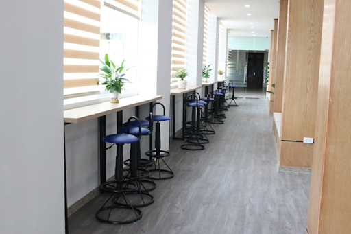
Không gian Làm việc chung tại tòa nhà A2
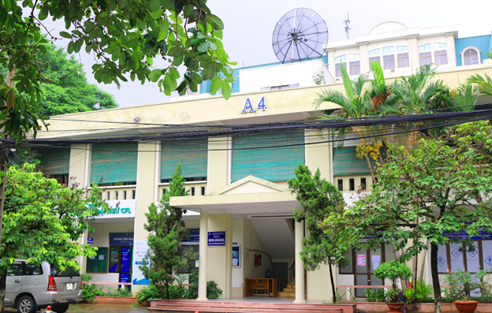
Khu A4 là trụ sở của Khoa NN&VH Nhật Bản, Đoàn Thanh niên, Khoa ĐT&BDNN, Phòng Quản trị, phòng Bảo vệ và các Trung tâm khác.
![[Có lỗi khi tải ảnh]](img/co_so_vat_chat/co_so_vat_chat_20.png)
Khu A3 là nơi làm việc của Khoa Sau Đại học, Khoa NN&VH Đức, Khoa NN&VH Hàn Quốc. Đây cũng là nơi diễn ra các hoạt động bảo vệ luận văn cao học.
![[Có lỗi khi tải ảnh]](img/co_so_vat_chat/co_so_vat_chat_21.png) Khu công trình khoa Pháp, niềm tự hào về kiến trúc của trường.
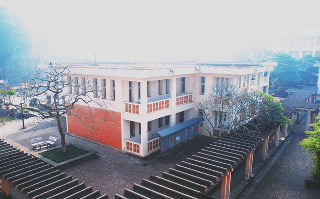
Trong khu vực này có các khu nhà C là giảng đường và văn phòng khoa.
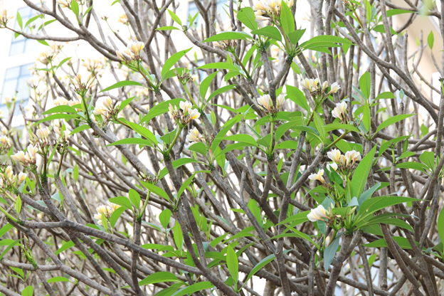
Nơi đây có rất nhiều mùa hoa nở như hoa đại, hoa phượng, bằng lăng, sen, súng, hoa giấy…
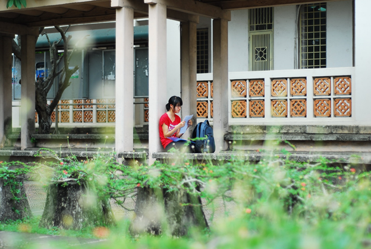
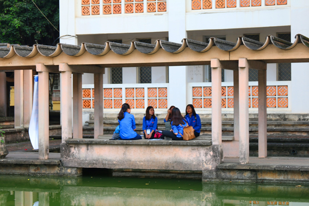
Sinh viên học bài và hoạt động câu lạc bộ ngoài trời là hình ảnh rất quen thuộc tại Khoa Pháp
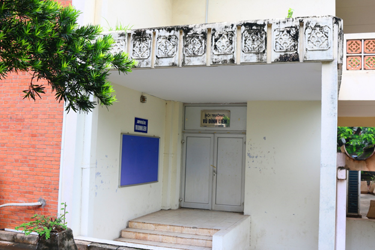
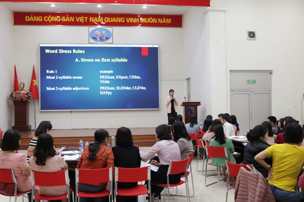
Khu vực trong và ngoài hội trường Vũ Đình Liên là nơi diễn ra nhiều sự kiện lớn.
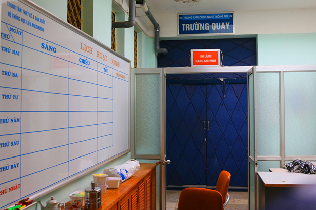
Trong khu nhà C5 có một trường quay được đầu tư cơ sở vật chất hiện đại.
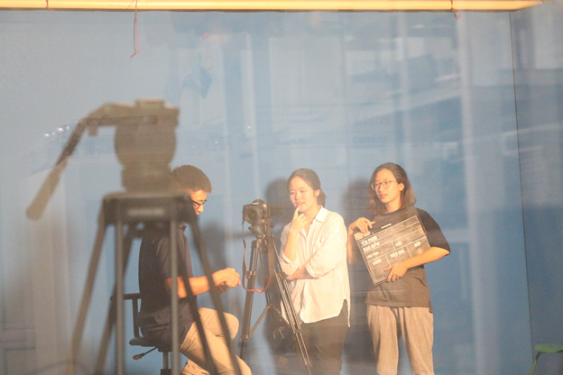
Đây là nơi dùng để sản xuất, ghi hình học liệu.
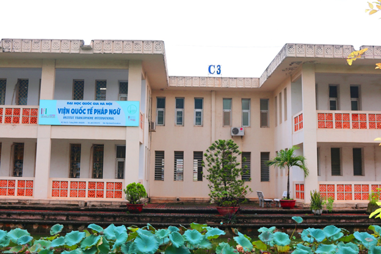
Trong khu C3 có các hội trường nhỏ, văn phòng làm việc và thư viện trường.
Thư viện là một kho tư liệu khổng lồ với hàng trăm nghìn đầu sách rất phong phú, chủ yếu là sách ngoại ngữ.
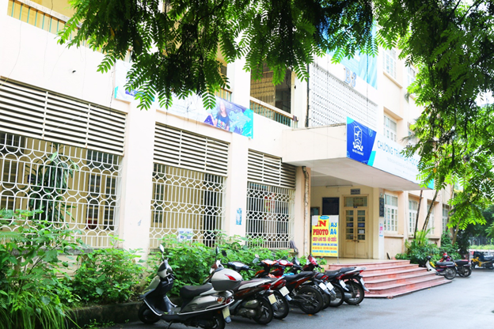
Giảng đường B3
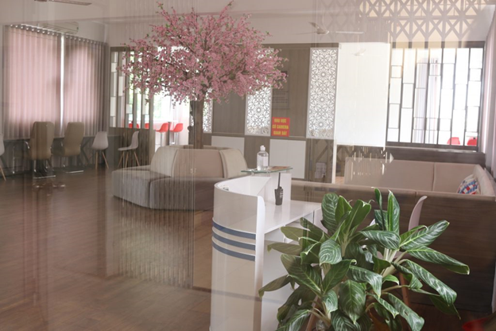
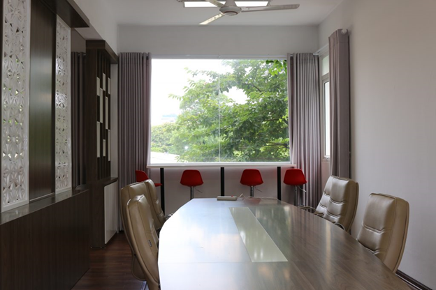
Homies B3 dành riêng cho giảng viên đến để làm việc, nghỉ ngơi.
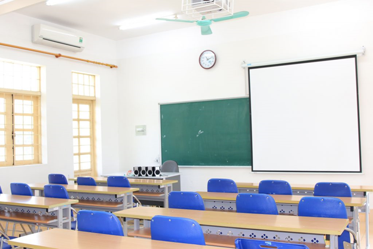
Một phòng học tại B3
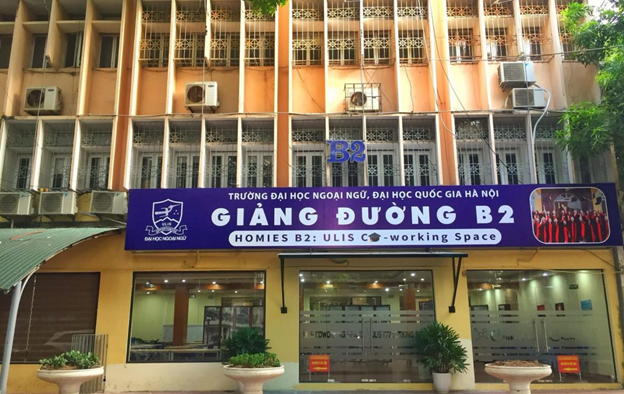
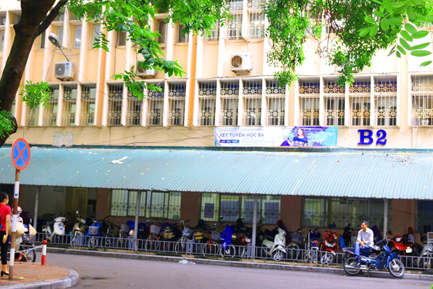
Khu công trình khoa Pháp, niềm tự hào về kiến trúc của trường.
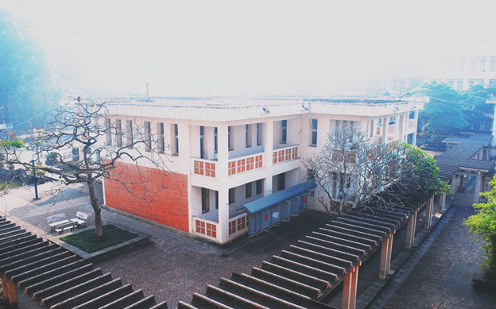
Trong khu vực này có các khu nhà C là giảng đường và văn phòng khoa.
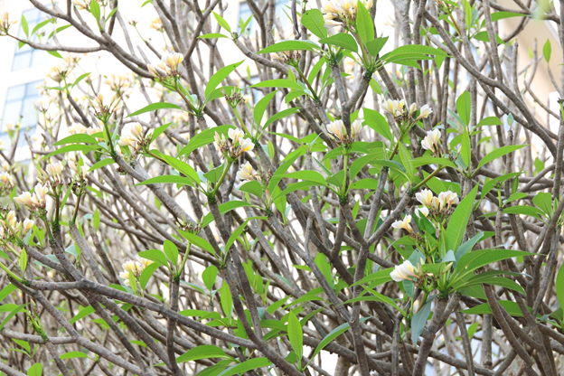
Nơi đây có rất nhiều mùa hoa nở như hoa đại, hoa phượng, bằng lăng, sen, súng, hoa giấy…
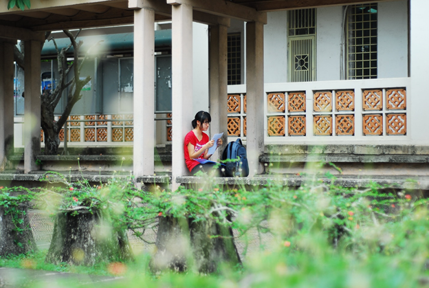
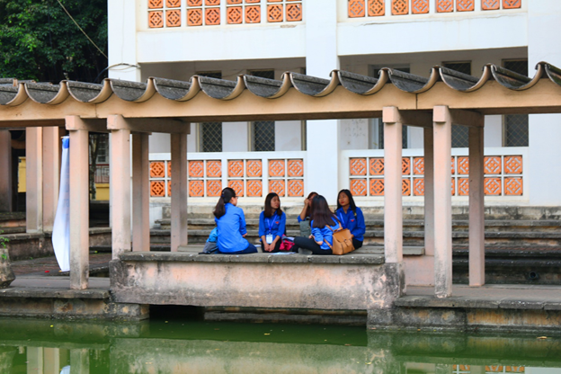
Sinh viên học bài và hoạt động câu lạc bộ ngoài trời là hình ảnh rất quen thuộc tại Khoa Pháp
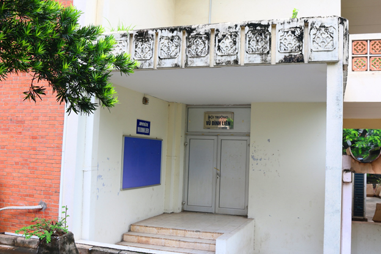
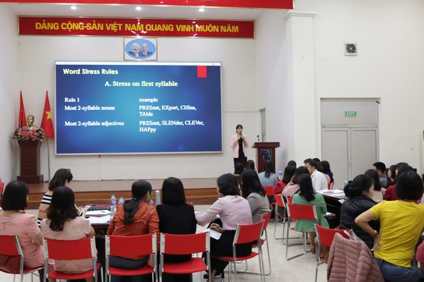
Khu vực trong và ngoài hội trường Vũ Đình Liên là nơi diễn ra nhiều sự kiện lớn.
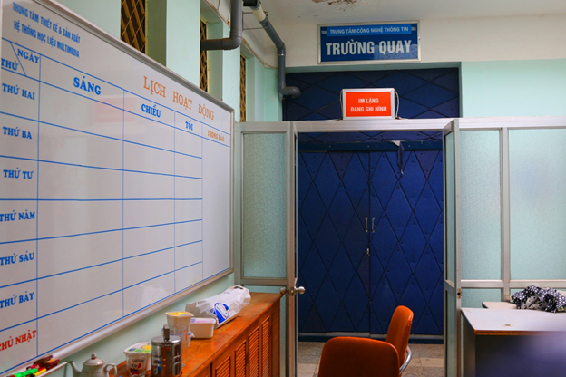
Trong khu nhà C5 có một trường quay được đầu tư cơ sở vật chất hiện đại.
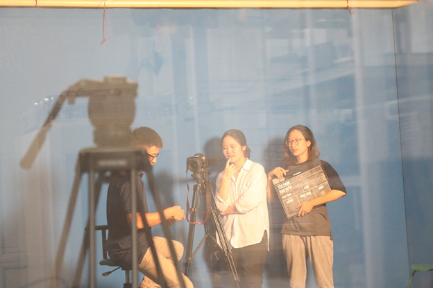
Đây là nơi dùng để sản xuất, ghi hình học liệu.

Trong khu C3 có các hội trường nhỏ, văn phòng làm việc và thư viện trường.
Thư viện là một kho tư liệu khổng lồ với hàng trăm nghìn đầu sách rất phong phú, chủ yếu là sách ngoại ngữ.

Giảng đường B3


Homies B3 dành riêng cho giảng viên đến để làm việc, nghỉ ngơi.

Một phòng học tại B3


Khu B2 có các phòng học và văn phòng khoa. Trường cũng có nhiều bãi để xe cho sinh viên, cán bộ ngay gần các giảng đường.
 Sinh viên nước ngoài học tại một phòng học thông minh ở B2.  Không gian làm việc chung ở tòa nhà B2  Không gian mở ở B2 là nơi để cán bộ và người học nghỉ ngơi, thư giãn  Tòa nhà Sunwah với nhiều hội trường là nơi diễn ra nhiều hội thảo, hoạt động giao lưu. Hội trường Nguyễn Văn Đạo thuộc ĐHQGHN với sức chứa khoảng 800 người cũng là nơi thường diễn ra các sự kiện lớn nhất trong năm của trường.
>  “Con đường tình yêu” lá đỏ vàng vào mùa thu và xanh mướt khi xuân hè sau trường rất được các bạn sinh viên yêu thích.  Chùa Thánh Chúa cũng là nơi quen thuộc với nhiều sinh viên ULIS. Trường THPT Chuyên Ngoại ngữ nổi tiếng trực thuộc trường. Nhiều học sinh đã lựa chọn học tiếp tại ULIS sau 3 năm học dưới mái trường này.
>  Khu tập thể gần trường, nơi có rất nhiều hàng quán là một thế giới giản dị và quen thuộc với các ULIS-er.  Nhà ăn sinh viên Xung quanh ULIS còn có khuôn viên của các trường đại học, trung học, tiệm sách, quán ăn…
Đăng bởi Ngoc Duc
tham khảo thông tin từ
ulis.vnu.edu.vn
.